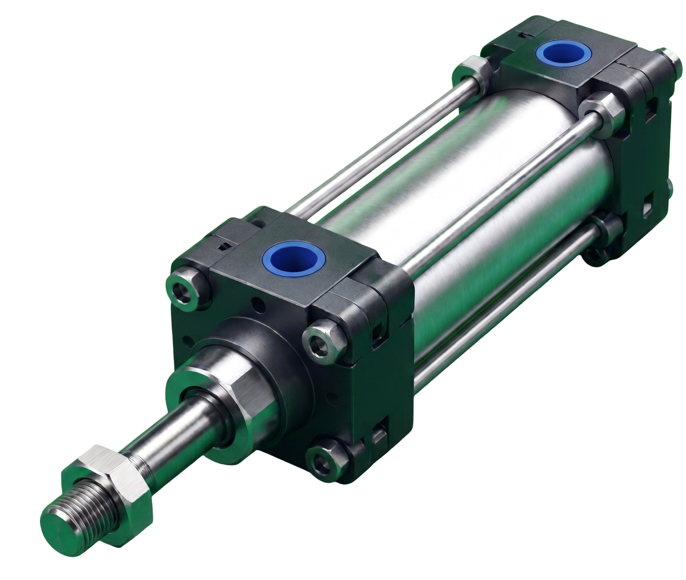
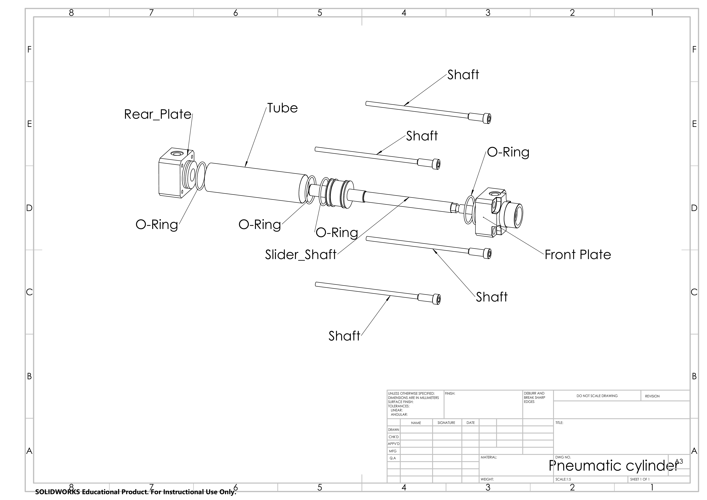
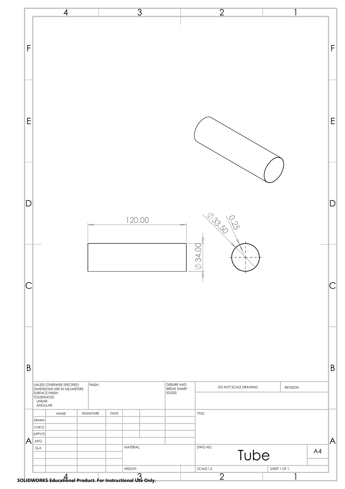
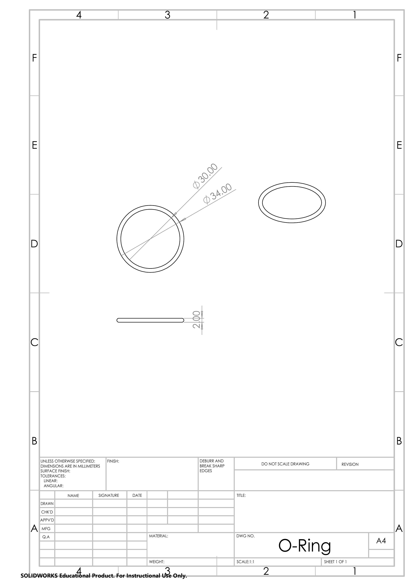
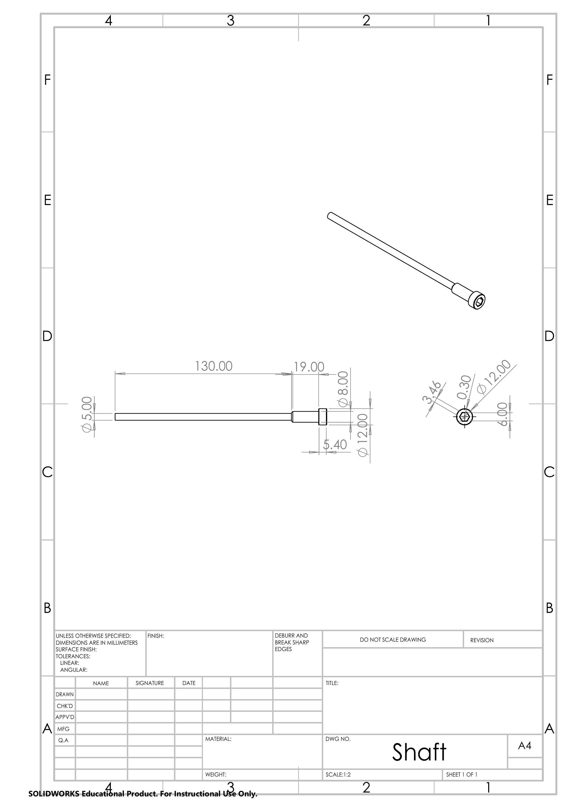

PNEUMATICS PART PROJECT
ENGINEERING MATERIALS

บทนำ
ที่มาและความหมายของกระบอกสูบนิวเมติกส์
คำว่า "นิวเมติกส์" (Pneumatics) มีรากศัพท์มาจากภาษากรีกโบราณคำว่า "Pneuma" ซึ่งแปลว่าลมหรือลมหายใจ ในทางวิศวกรรมนิวเมติกส์คือศาสตร์ที่นำพลังงานจาก "ลมอัด" (Compressed Air) มาประยุกต์ใช้ในการขับเคลื่อนเชิงกล โดยมี กระบอกสูบนิวเมติกส์ (Pneumatic Cylinder) เป็นอุปกรณ์ทำงานหรืออุปกรณ์ขับเคลื่อนหลัก (Actuator) ที่ทำหน้าที่เปลี่ยนพลังงานความดันของลมอัดให้เป็นพลังงานกลในแนวเส้นตรงหรือแนวหมุน ถือเป็นหัวใจสำคัญในระบบอัตโนมัติยุคอุตสาหกรรมเนื่องจากมีโครงสร้างไม่ซับซ้อน ปลอดภัย และบำรุงรักษาง่าย
เหตุผลในการเลือกใช้กระบอกสูบประเภทนี้
Inกระบวนการจัดแพ็คขวดน้ำดื่ม PET ขนาด 550 ml จำนวน 12 ขวด (เรียงแบบ 3×4 บล็อก) จะมีน้ำหนักโหลดรวมตัวผลิตภัณฑ์ (Gross Load) อยู่ที่ประมาณ 6.8 - 7.0 kg ซึ่งระบบต้องการกลไกผลักคัดแยกที่มีเสถียรภาพสูง กระบอกสูบแบบทำงานสองทาง (Double Acting) จึงตอบโจทย์ทางวิศวกรรมได้ดีที่สุดด้วยคุณสมบัติเด่น 3 ประการ: 1) ความสามารถในการควบคุมแรงดันแปรผัน (Bi-directional Force Control) ทั้งจังหวะเดินหน้าผลักกลุ่มขวดน้ำ และจังหวะถอยกลับเพื่อเตรียมรับชุดถัดไป ทำให้รอบเวลาทำงาน (Cycle Time) คงที่ 2) ความสม่ำเสมอของความเร็ว (Velocity Profiles) เนื่องจากสามารถติดตั้งวาล์วปรับความเร็วลมอัด (Speed Controller) แยกอิสระทั้งสองทาง ป้องกันไม่ให้แรงกระแทกกระทำต่อขวด PET แรงเกินไปจนเกิดการล้มหรือโครงสร้างขวดบิดเบี้ยว และ 3) การไม่มีแรงต้านทานจากสปริงภายในเหมือนระบบ Single Acting ทำให้สามารถใช้แรงดันสถิต (Static Pressure) จากระบบลมอัดอุตสาหกรรมขนาด 5 - 7 บาร์ ขับเคลื่อนได้อย่างเต็มประสิทธิภาพ ส่งผลให้จังหวะการทำงานมีความแม่นยำสูง (High Repeatability) เหมาะแก่สายการผลิตบรรจุภัณฑ์อัตโนมัติที่ทำงานต่อเนื่องระยะยาว
ดูโมเดล 3D
หลักการในการเลือกกระบอกสูบ
ในการเลือกกระบอกสูบนิวเมติกส์ไปใช้งานเบื้องต้น จะต้องพิจารณาจากปัจจัยหลัก 4 ประการ ได้แก่ แรงที่ต้องการใช้งาน (Force) เพื่อคำนวณหาขนาดเส้นผ่านศูนย์กลางกระบอกสูบ, ระยะก้านชัก (Stroke) ให้สอดคล้องกับระยะการเคลื่อนที่ของเครื่องจักร, ความเร็ว (Speed) ที่ต้องการในวงจร, และ ความดันลมอัด (Operating Pressure) ในระบบ เพื่อให้กระบอกสูบทำงานได้อย่างมีประสิทธิภาพและปลอดภัย
ประเภทของกระบอกสูบนิวเมติกส์
- Single Acting: ใช้ลมดันออกทางเดียว และใช้สปริงช่วยในการดันลูกสูบคืนตัว
- Double Acting: ใช้แรงดันลมในการขับเคลื่อนทั้งจังหวะออกและจังหวะเข้า (เป็นประเภทที่นิยมใช้งานมากที่สุด)
- Rodless Cylinder: กระบอกสูบแบบไม่มีก้านสูบยื่นออกมาภายนอก ช่วยในการประหยัดพื้นที่ติดตั้ง
- Rotary Actuator: อุปกรณ์ขับเคลื่อนที่ให้ส่งแรงออกมาในลักษณะของการเคลื่อนที่แบบหมุน
อุตสาหกรรมที่นำไปใช้งาน
ถูกนำไปใช้งานอย่างแพร่หลายในสายการผลิตอัตโนมัติ เช่น อุตสาหกรรมยานยนต์, บรรจุภัณฑ์, ชิ้นส่วนอิเล็กทรอนิกส์, อุตสาหกรรมอาหาร รวมถึงระบบจับยึดชิ้นงานต่าง ๆ
ประเภทและการเลือกใช้กระบอกสูบแบบนิวแมติก
การเลือกใช้ประเภทกระบอกสูบนิวเมติกส์และขนาดที่ถูกต้อง มีความสำคัญเป็นอย่างยิ่งต่อประสิทธิภาพ ความทนทาน และความปลอดภัยของระบบกลไกอัตโนมัติในงานวิศวกรรม
เกณฑ์สำคัญในการเลือกใช้งาน (Key Selection Criteria)
- ระยะช่วงชัก (Stroke Length): ระยะทางที่ก้านสูบเคลื่อนที่เข้า-ออกจริงตามความต้องการของจลนศาสตร์ของเครื่องจักร
- ขนาดเส้นผ่านศูนย์กลางกระบอกสูบ (Bore Size): ส่งผลโดยตรงต่อแรงผลัก (Push Force) และแรงดึง (Pull Force) ของกระบอกสูบตามหลักการกลศาสตร์ของไหล
- แรงดันใช้งาน (Operating Pressure): ระดับความดันลมอัดของระบบ (ปกติคำนวณที่ความดันมาตรฐานของอุตสาหกรรมประมาณ 5 - 7 บาร์)
- สภาพแวดล้อมและอุณหภูมิ (Environment & Temperature): สำหรับเลือกชนิดวัสดุโครงสร้างและชนิดของซีลกันรั่วให้เหมาะสม เช่น งานความร้อนสูงหรืองานด้านอาหาร (Food Grade)
ตารางเปรียบเทียบการเลือกใช้งานกระบอกสูบแต่ละประเภท
| ประเภทกระบอกสูบ | ลักษณะแรง/การทำงาน | แอปพลิเคชันที่เหมาะสม | ข้อจำกัด |
|---|---|---|---|
| Single Acting Cylinder | กระทำด้วยลมทิศทางเดียว คืนตัวด้วยสปริง | งานหนีบยึดชิ้นงานชั่วคราว, งานตัด, งานดันวัตถุขนาดเล็ก | ระยะ Stroke สั้น (เนื่องจากข้อจำกัดความยาวสปริงภายใน) |
| Double Acting Cylinder | กระทำด้วยแรงดันลมทั้ง 2 ทิศทาง (เข้า-ออก) | สายพานลำเลียง, แขนกลจับชิ้นงาน, อุตสาหกรรมยานยนต์ทั่วไป | ใช้ปริมาณลมอัดมากกว่าแบบ Single Acting เท่าตัว |
| Compact / Short Stroke | โครงสร้างสั้นและบาง แรงดันสูงในพื้นที่จำกัด | อุตสาหกรรมอิเล็กทรอนิกส์, เครื่องจักรประกอบชิ้นส่วนขนาดเล็ก | มีช่วงชักสั้นมาก ไม่เหมาะกับงานระยะยาว |
| Rodless Cylinder | ขับเคลื่อนตลับเลื่อนภายนอกโดยไม่มีก้านสูบยื่น | งานเปิด-ปิดประตูอัตโนมัติบานกว้าง, ระบบเลื่อนตัดวัสดุแนวยาว | การป้องกันฝุ่นละอองเข้าสู่ร่องสไลด์ทำได้ยากกว่าปกติ |
หลักการเลือกใช้วัสดุสำหรับกระบอกสูบนิวแมติก
ในการออกแบบทางวิศวกรรมวัสดุ (Engineering Materials) การเลือกใช้วัสดุมาผลิตชิ้นส่วนต่าง ๆ ของกระบอกสูบนิวแมติก จะต้องพิจารณาจากคุณสมบัติทางกล (Mechanical Properties), น้ำหนัก, ความทนทานต่อการกัดกร่อน และต้นทุนการผลิต เพื่อให้กระบอกสูบสามารถทำงานภายใต้สภาวะลมอัดได้อย่างมีประสิทธิภาพสูงสุด
🛠️ ปัจจัยหลักทางวิศวกรรมในการพิจารณาเลือกวัสดุ
- ความแข็งแรงเชิงกล (Mechanical Strength): วัสดุต้องทนทานต่อความเค้นแรงดัน (Pressure Stress) ของลมอัดภายในกระบอกสูบ และทนแรงกระแทกซ้ำ ๆ ได้ดีโดยไม่เกิดการเปลี่ยนรูปถาวร
- น้ำหนักและความหนาแน่น (Weight & Density): ชิ้นส่วนที่เคลื่อนที่ เช่น ก้านสูบและลูกสูบ ควรมีน้ำหนักเบาเพื่อลดความเฉื่อย (Inertia) ส่งผลให้ตอบสนองการเคลื่อนที่ได้อย่างรวดเร็วและประหยัดพลังงาน
- ความต้านทานแรงเสียดทานและการสึกหรอ (Wear Resistance): ผิวด้านในกระบอกสูบ (Bore) ต้องมีความเรียบลื่นสูง และทนต่อแรงเสียดสีของซีลยาง NBR/PTFE ตลอดอายุการใช้งาน
- ความทนทานต่อการกัดกร่อน (Corrosion Resistance): ในระบบนิวแมติกส์มักมีความชื้นสะสมปนมากับลมอัด วัสดุจึงต้องไม่เป็นสนิมง่ายเพื่อป้องกันความเสียหายต่อซีลกันรั่ว
กรณีศึกษา: การเลือกใช้วัสดุในโปรเจกต์นี้ (Project Material Design Case)
| ชิ้นส่วนโครงสร้าง | วัสดุที่เลือกใช้ | เหตุผลสำคัญทางวิศวกรรม (Engineering Reasons) |
|---|---|---|
| ตัวกระบอก (Cylinder Tube) | Aluminum 6063 | น้ำหนักเบามาก ช่วยลดภาระโครงสร้างโดยรวม, อลูมิเนียมเกรด 6063 มีคุณสมบัติในการรีดขึ้นรูปทรงกระบอกกลวงได้เรียบเนียน (Excellent Extrudability) และทนต่อการกัดกร่อนจากความชื้นในอากาศได้ดีเยี่ยม |
| แกนเพลาลูกสูบ (Piston Rod) | Chrome-Plated Steel | เหล็กกล้าให้ค่าความเค้นดึง (Tensile Strength) สูงมาก รองรับแรงกดและแรงดัดงอขณะทำงานหนัก และการเคลือบผิวด้วยฮาร์ดโครม (Chrome-Plating) ช่วยเพิ่มความแข็งที่ผิว ลดแรงเสียดทาน และป้องกันรอยขีดข่วนจากการเคลื่อนที่ผ่านซีล |
| ฝาปิดหน้า-หลัง (End Caps) | Aluminum 6061-T6 / 6063 | ให้อัตราส่วนความแข็งแรงต่อน้ำหนักที่ดีเยี่ยม (Strength-to-Weight Ratio) สามารถแปรรูปขึ้นรูปด้วยเครื่องจักร (Machinability) เพื่อเจาะรูนำลม รูร้อยสลักยึด (Tie-rods) และทำบ่าซีลได้อย่างแม่นยำสูง |
การแบบจำลองเชิงกล 3 มิติ

CAT3D Components
Front Plate
Rear Plate
Tube
Slider Shaft
Shaft
O-Ring
2.3 การเขียนแบบเครื่องกล 2 มิติ (Engineering Drawing)
การดึงแบบแปลน 2 มิติ (2D Drawing) จากโมเดล 3 มิติ เพื่อแสดงรายละเอียดขนาด (Dimensions) และความคลาดเคลื่อน (Tolerances) สำหรับการผลิตจริง

ตัวกระบอกสูบ (Cylinder Tube)
แบบแปลนแสดงโครงสร้างทรงกระบอกกลวง มีความยาวรวมชิ้นงาน 120.00 มม. ระบุขนาดเส้นผ่านศูนย์กลางภายนอก ø34.00 มม. และเส้นผ่านศูนย์กลางภายในสำหรับคว้านรู (Bore Size) ø33.50 มม. มีความหนาผนังกระบอกสูบอยู่ที่ 0.25 มม.

แกนเพลาและลูกสูบ (Piston Slider Shaft)
แบบขยายโครงสร้างแกนเพลาขับเคลื่อนหลักและชุดลูกสูบ แสดงระยะชักหลักแนวยาว 110.00 มม. ขนาดเส้นผ่านศูนย์กลางตัวลูกสูบหลัก ø32.96 มม. มีร่องติดตั้งซีลโอริงขนาด ø12.15 มม. และ ø13.07 มม. ปลายแกนเพลาส่งกำลังลดขนาดสเตปเหลือ ø10.00 มม.

ฝาปิดด้านหน้า (Front Plate)
พิมพ์เขียวแสดงมุมมองออร์โธกราฟิกและโครงสร้างตัดขวางของฝาปิดหน้า ขนาดภายนอก 47.00x47.00 มม. มีบ่าทรงกลมยื่นความยาว 12.70 มม. ขนาด ø30.00 มม. เจาะรูคว้านตรงกลาง ø15.00 มม. พร้อมร่องยึดสกรู Tie-rod ø8.00 มม. ทั้ง 4 มุม

ฝาปิดด้านหลัง (Rear Plate)
แบบแปลนแสดงมิติส่วนประกอบของฝาปิดท้ายกระบอกสูบหนา 27.00 มม. มีรูนำลมเข้า-ออก (Air Port) เจาะลึกระบุตำแหน่งระยะ 13.00 มม. ตัวรับแกนบ่ากระบอกสูบ ø30.00 มม. ยื่นออก 0.50 มม. และเจาะรูร้อยสลักเกลียว ø4.20 มม.

วงแหวนยางกันรั่ว (O-Ring)
พิมพ์เขียวแสดงมิติมนมาตรฐานของชิ้นส่วนยางกันลมรั่วไหล (Seals) ระบุขนาดเส้นผ่านศูนย์กลางภายนอก (Outer Diameter) ø34.00 มม. ขนาดเส้นผ่านศูนย์กลางภายใน (Inner Diameter) ø30.00 มม. และมีความหนาของตัวหน้าตัดโอริงอยู่ที่ 2.00 มม.

สลักเกลียวยึดโครงสร้าง (Shaft / Tie Rod)
แบบแสดงมิติชิ้นส่วนแกนเหล็กขันยึดประกอบโครงสร้างกระบอกสูบ ส่วนแกนเรียวยาวระบุขนาดความยาว 130.00 มม. เส้นผ่านศูนย์กลาง ø5.00 มม. ปลายหัวล็อกหกเหลี่ยมหนา 5.40 มม. ขนาด ø12.00 มม. พร้อมร่องบ่ารับแรงยาว 19.00 มม.
3.6 นิวเมติกส์และวงจรควบคุม
นอกเหนือจากการเลือกใช้วัสดุโครงสร้างที่มีความเหมาะสมตามลักษณะงาน เช่น โครงสร้างภายนอกแบบอลูมิเนียมโปรไฟล์น้ำหนักเบา หรือการเลือกใช้สแตนเลส (Stainless Steel) ในอุตสาหกรรมอาหารและเครื่องดื่มเพื่อสุขอนามัยแล้ว การออกแบบระบบทำงานและวงจรควบคุมลมอัดเบื้องต้น (Fundamental Pneumatic Circuit) ถือเป็นปัจจัยสำคัญที่วิศวกรต้องตระหนักถึง เพื่อเสถียรภาพและยืดอายุการใช้งานเครื่องจักร
💨 ระบบเตรียมลมสะอาด (FRL Unit)
ลมอัดที่ถูกผลิตจากปั๊มลมทั่วไปมักจะมีความชื้น ละอองน้ำ ฝุ่นละออง และคราบน้ำมันปะปนมาด้วย ซึ่งเป็นอันตรายอย่างยิ่งต่อระบบซีลภายใน (NBR/PTFE) ของกระบอกสูบ ทำให้อายุการใช้งานสั้นลงและเกิดการรั่วไหลภายใน (Internal Leakage) ดังนั้น ระบบจึงจำเป็นต้องติดตั้ง ชุดเตรียมลมสะอาด (FRL Unit) ก่อนเข้าสู่ส่วนควบคุม โดย FRL ประกอบด้วยอุปกรณ์ 3 ชิ้นหลักคือ:
- Filter (ตัวกรองลม): ทำหน้าที่ดักจับละอองน้ำ ความชื้น และฝุ่นผงขนาดเล็กเพื่อควบแน่นและระบายทิ้ง
- Regulator (ตัวควบคุมแรงดัน): ทำหน้าที่รักษาแรงดันใช้งานให้อยู่ในเกณฑ์สม่ำเสมอคงที่ (ปกติกำหนดไว้ที่ 5 - 6 บาร์) แม้แรงดันในถังจ่ายลมจะแกว่งตัว
- Lubricator (ตัวผสมน้ำมันหล่อลื่น): จ่ายละอองน้ำมันหล่อลื่นปริมาณเล็กน้อยปนไปกับลมอัด เพื่อช่วยลดแรงเสียดทานระหว่างซีลและผิวกระบอกสูบ
🧮 เครื่องคำนวณทางวิศวกรรมเพื่อเลือกขนาดกระบอกสูบ (Interactive Design Calculator)
คุณสามารถปรับเปลี่ยนและกรอกข้อมูลตัวเลขน้ำหนักผลิตภัณฑ์ จำนวน หรือแรงดันใช้งานด้านล่างนี้ ระบบจะทำการประมวลผลคำนวณพารามิเตอร์ทางกลและหลักกลศาสตร์ของไหลให้แบบ Real-time ทันที:
1. วิเคราะห์แรงกระทำจากภาระโหลด (Load Analysis)
น้ำหนักรวมของขวดน้ำ ผลิตภัณฑ์ = 6.60 kg
โหลดรวมจริงทั้งหมด (Gross Load, m) = 7.00 kg
แรงต้านเนื่องจากแรงโน้มถ่วง (F_g = m × g) = 68.67 N
2. กำหนดค่าสัมประสิทธิ์ความปลอดภัย (Safety Factor)
แรงผลักเป้าหมายขั้นต่ำที่กระบอกสูบต้องทำได้จริง (Required Target Force, F = F_g × SF) = 137.34 N
3. คำนวณขนาดกระบอกสูบจากแรงดันใช้งาน (Bore Size Calculation)
แรงดันใช้งานที่แปลงหน่วยแล้ว (P) = 0.50 N/mm²
จากสูตรความเค้นแรงดันขยายตัว F = P × A โดยที่ A = (π × D²) / 4 จะได้ขนาดทางทฤษฎีคือ:
D = √[ (F × 4) / (P × π) ] = 18.70 mm
4. สรุปผลและการเลือกขนาดมาตรฐาน (Engineering Standardization)
ขนาดเส้นผ่านศูนย์กลาง Bore Size ขั้นต่ำในทางปฏิบัติคือ 18.70 mm.
เพื่อให้ระบบเสถียรและทนแรงกระแทกซ้ำ ๆ ในโปรเจกต์นี้จึงเลือกใช้ขนาดมาตรฐานอุตสาหกรรมทดแทนคือ Bore Size 40 mm
(ซึ่งตรงกับแบบพิมพ์เขียวผิวด้านในกระบอกสูบขนาด ø40.00 mm ของกลุ่มพอแล้ว พอแล้ว)
ตรวจสอบแรงผลักจริงที่เกิดขึ้นที่ขนาด 40 mm: แรงผลักจริงที่สร้างได้ = 628.32 N
(ปลอดภัยสูงสุด แรงเหลือเฟือเอาชนะโหลดได้แน่นอน)
การควบคุมความเร็วด้วย Speed Controller (Meter-out Control)
ในการประยุกต์ใช้ผลักขวดน้ำ PET ขนาด 550 ml นั้น การควบคุมความเร็วและอัตราเร่งมีความอ่อนไหวสูงมาก หากกระบอกสูบเคลื่อนที่เร็วเกินไป แรงกระแทกจากการชน (Dynamic Impact Force) จะทำให้ขวดน้ำล้มระเนระนาด หรือโครงสร้างขวดบิดเบี้ยวเสียหาย ทางวิศวกรรมจึงเลือกใช้ Speed Controller (วาล์วหรี่ควบคุมอัตราไหลชนิดปรับได้) ติดตั้งที่พอร์ตลมทั้งจังหวะเดินหน้าและถอยกลับ
โดยมีหลักการสำคัญคือใชวงจรควบคุมแบบ Meter-out (การหรี่ลมระบายทิ้ง) ซึ่งจะปล่อยให้ลมอัดฝั่งต้นทางจ่ายเข้ากระบอกสูบอย่างเต็มที่ (ส่งผลให้สร้างแรงดันสถิตได้คงที่ตามผลคำนวณด้านบน) แต่จะทำการหรี่หน่วงลมระบายออก (Exhaust Air) ฝั่งตรงข้ามเอาไว้ การควบคุมแบบนี้จะช่วยสร้าง "แรงต้านย้อนกลับ (Cushioning Pressure)" ทำให้ก้านสูบเคลื่อนที่ได้อย่างนุ่มนวล สม่ำเสมอ ไม่กระตุก และสามารถปรับลดความเร็วในการดันขวดเข้าสถานีแพ็คได้อย่างแม่นยำ ป้องกันความเสียหายต่อบรรจุภัณฑ์ได้อย่างสมบูรณ์
รายการวัสดุ
List of materials and components used to assemble the pneumatic cylinder.

ภาพแสดงโครงสร้างและการประกอบชิ้นส่วน (Exploded View)
| ลำดับ | ชิ้นส่วน | วัสดุ | จำนวน |
|---|---|---|---|
| 1 | Tube (Cylinder Barrel) | Aluminum 6063 | 1 |
| 2 | O-Ring | NBR / PTFE | 4 |
| 3 | Rear Plate (End Cap) | Aluminum 6061-T6 / 6063 | 1 |
| 4 | Slider Shaft (Piston & Rod) | Chrome-Plated Steel | 1 |
| 5 | Front Plate (End Cap) | Aluminum 6061-T6 / 6063 | 1 |
| 6 | Shaft (Tie Rod) | Steel | 4 |
ด้านความหลากหลายของสินค้า (Product Versatility)
การออกแบบระบบปฏิบัติการและกลไกของกระบอกสูบให้รองรับการทำงานกับสินค้าที่มีความหลากหลาย ถือเป็นหัวใจสำคัญที่ทำให้ระบบอัตโนมัติมีความคุ้มค่า ซึ่งในโปรเจกต์นี้มีจุดเด่น 3 ประการดังนี้:
- Modular Design (การออกแบบโมดูลาร์) การออกแบบชิ้นส่วนต่างๆ ให้สามารถถอดประกอบและปรับเปลี่ยนรูปแบบได้ตามความต้องการของสายการผลิต (Flexible Adaptability) ช่วยให้ระบบมีความยืดหยุ่นสูง รองรับขนาดและรูปแบบของบรรจุภัณฑ์ที่หลากหลายโดยไม่ต้องรื้อสร้างระบบเครื่องจักรใหม่ทั้งหมด
- Modular Pusher Plate (แผ่นผลักที่ถอดเปลี่ยนได้) แผ่นหน้าสัมผัสสำหรับผลักบรรจุภัณฑ์ถูกออกแบบมาให้ถอดเปลี่ยนได้สะดวกรวดเร็ว (Quick Change) เพื่อให้รับกับรูปทรงของขวด PET ขนาดต่างๆ หรือสินค้าแบบอื่น ป้องกันไม่ให้เกิดความเสียหายหรือเสียรูปทรงขณะทำการผลักคัดแยก
- Capacity Handling (สมรรถนะการรองรับน้ำหนัก) โครงสร้างกลไกและกระบอกสูบมีสมรรถนะสูง สามารถจัดการกับภาระโหลดรวม (Gross Payload) ตั้งแต่ 10 กิโลกรัม จนถึงระดับ 20 กิโลกรัมได้อย่างมั่นคงและมีเสถียรภาพ ทำให้พร้อมประยุกต์ใช้งานกับสินค้ากลุ่มแพ็คใหญ่ได้ทันที
ด้านระบบควบคุมและซอฟต์แวร์ (Control & Automation Compatibility)
การบูรณาการกระบอกสูบนิวเมติกส์เข้ากับระบบควบคุมอัตโนมัติเป็นสิ่งสำคัญเพื่อให้เกิดประสิทธิภาพสูงสุด โปรเจกต์นี้ได้รับการออกแบบให้รองรับสถาปัตยกรรมซอฟต์แวร์และฮาร์ดแวร์ที่หลากหลาย:
- Universal PLC Support (รองรับมาตรฐาน PLC สากล) สามารถทำงานร่วมกับชุดควบคุมตรรกะแบบโปรแกรมได้ (PLC) ชั้นนำของอุตสาหกรรม เช่น Mitsubishi MELSEC, SIEMENS S7-1200 และ OMRON รวมถึงรองรับไมโครคอนโทรลเลอร์ทางเลือกอย่าง Arduino และ ESP32 สำหรับงานต้นแบบและระบบขนาดเล็ก
- IoT Ready (พร้อมเชื่อมต่อโครงข่าย IoT) โครงสร้างระบบถูกเตรียมความพร้อมสำหรับการอัปเกรดเข้าสู่ระบบ Internet of Things (IoT) ช่วยให้สามารถดึงข้อมูลสถานะการทำงานแบบเรียลไทม์ (Real-time monitoring) ส่งไปยังคลาวด์หรือศูนย์ควบคุมส่วนกลางได้ทันที
- Flexible Sensing (รองรับเซนเซอร์หลากหลายรูปแบบ) ออกแบบให้สามารถสลับหรือติดตั้งเซนเซอร์ตรวจจับได้หลากหลายประเภทตามลักษณะชิ้นงาน เช่น Photoelectric Sensor สำหรับตรวจจับวัตถุทึบแสง, Proximity Sensor สำหรับโลหะ, และรองรับการทำงานร่วมกับระบบ Camera (Machine Vision) สำหรับงานคัดแยกที่ต้องการความแม่นยำสูง
ด้านมาตรฐานเชิงกล (Mechanical & Standard Compatibility)
ระบบถูกพัฒนาโดยคำนึงถึงมาตรฐานการประกอบเชิงกลสากล เพื่อความสะดวกในการซ่อมบำรุง การจัดหาอะไหล่ และการบูรณาการเข้ากับโครงสร้างพื้นฐานเดิมของโรงงาน:
- ISO Standard Compliance (มาตรฐานสากล ISO) กระบอกสูบและอุปกรณ์หลักผ่านการรับรองมาตรฐานสากล เช่น ISO 15552 และ ISO 6431 ซึ่งเป็นบรรทัดฐานที่แบรนด์อุปกรณ์ลมชั้นนำระดับโลกอย่าง SMC, FESTO และ AIRTAC ยึดถือ ทำให้มั่นใจได้ว่าอุปกรณ์สามารถใช้งานทดแทนกันได้ (Interchangeable) อย่างสมบูรณ์
- Industrial Frame Integration (ติดตั้งง่ายกับโครงสร้างมาตรฐาน) ออกแบบมาให้รองรับการติดตั้งเข้ากับ Aluminium Profile (ขนาด 30x30 หรือ 40x40 mm) ได้ทันทีโดยไม่ต้องผ่านการเชื่อมเหล็ก (Without Welding) ช่วยลดระยะเวลาในการติดตั้ง (Setup Time) และลดความเสียหายต่อโครงสร้างเดิมของเครื่องจักร
3. สมาชิกกลุ่ม

ธีรภัทร เก่งนอก
Team Leader
ID: 2411220078

พีระพัฒน์ โภคพูล
ID: 2411220342

อนุรักษ์ ศิริภักดี
ID: 2511220127

ศรัญญู ภูเขาใหญ่
ID: 2411220268